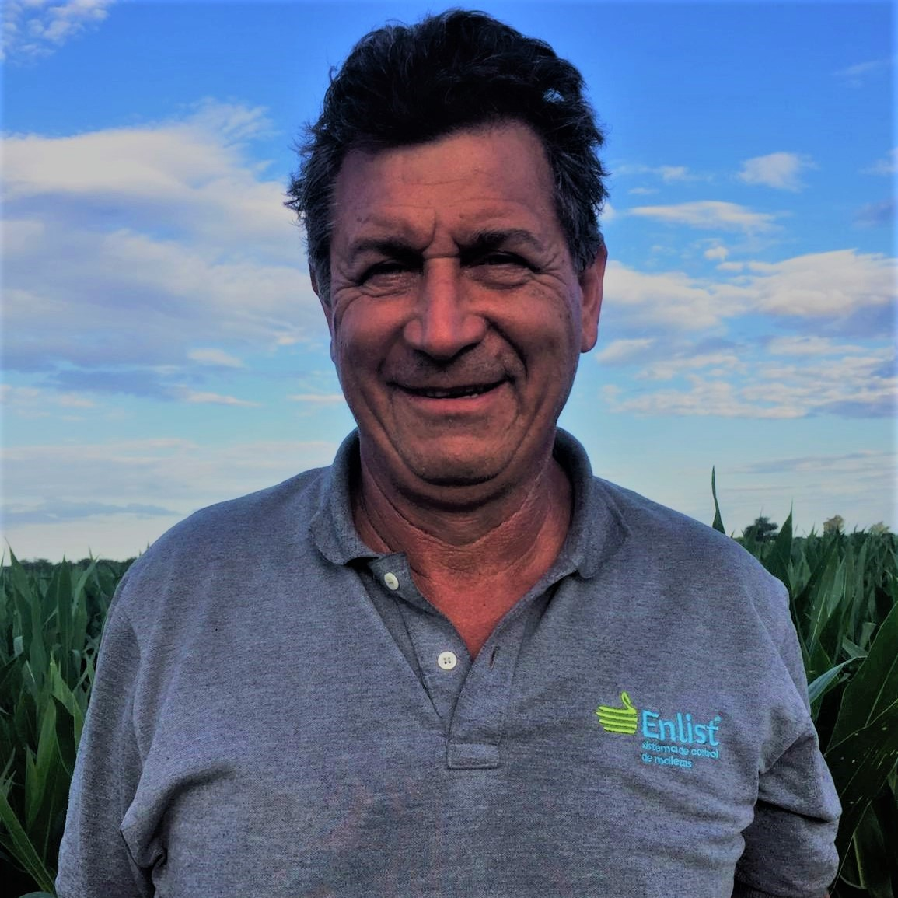
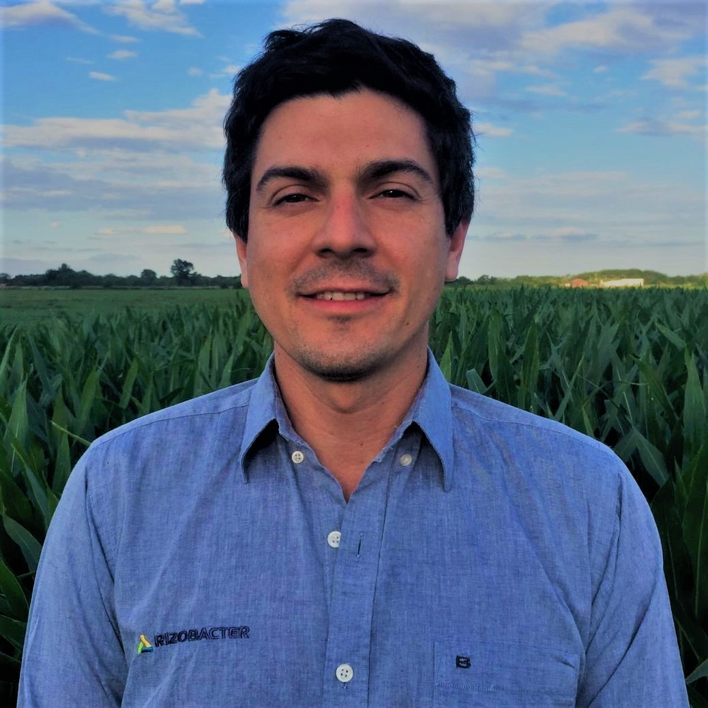
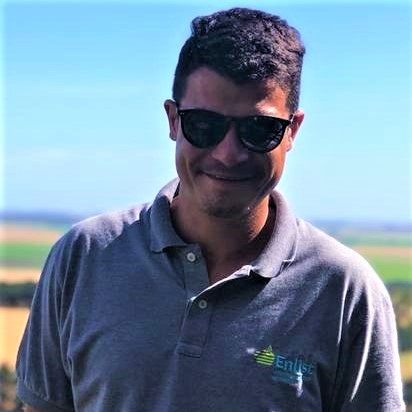
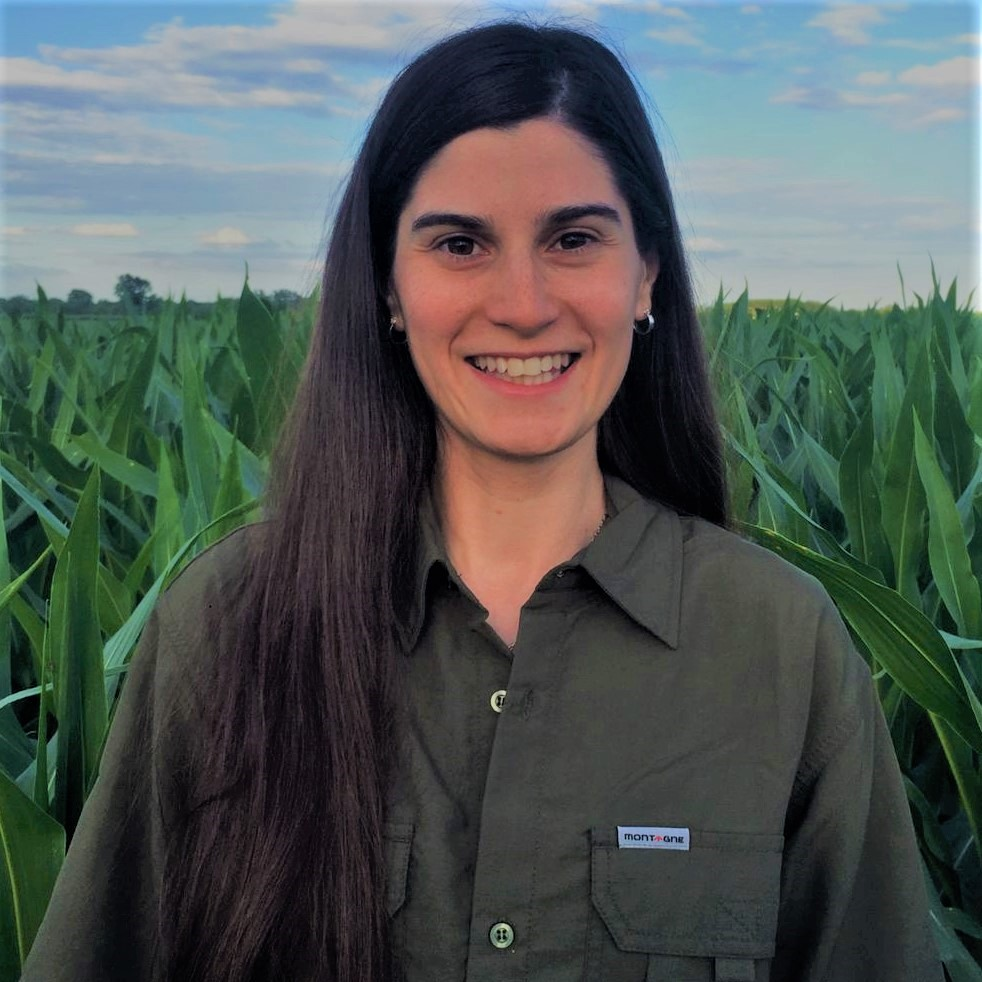

Somos una empresa familiar que se dedica a la agricultura desde hace varias décadas. Ofrecemos servicios de asesoría técnica, para que puedas maximizar tus rendimientos. Además, ofrecemos el servicio de ensayos experimentales a campo, incursionando y actualizandonos constantemente en las nuevas tecnologías.
EQUIPO

Luis Serafini
Co-founder & Ceo.

Pablo Serafini
Co-founder & Investor

Gonzalo Serafini
Application team leader

Antonella Serafini
Technical advice